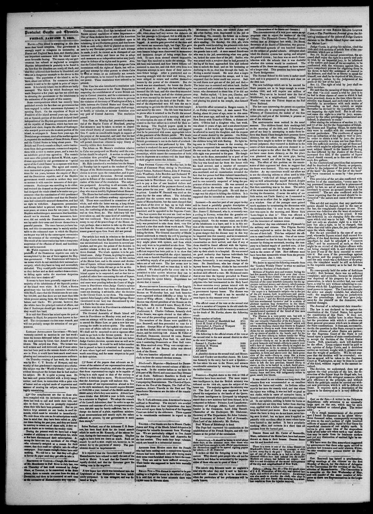

Soulouque was unwilling to do either, and resisted the demand on
https://www.loc.gov/resource/sn83021578/1853-01-07/ed-1/?sp=2

See the original pageVer la página original
The Pawtucket Gazette and Chronicle reported that Haitian Emperor Soulouque rejected Dominican independence, insisting the island was indivisible, though he offered assurances that hostilities would not resume. The ongoing truce was attributed in part to the depletion of the Haitian treasury following Soulouque’s lavish coronation ceremonies. An observer, Mr. Walsh, concluded that Dominican independence could ultimately only be maintained by force of arms against Haiti.
La Pawtucket Gazette and Chronicle notificó que el emperador haitiano Soulouque desconoció la emancipación dominicana persistiendo en la indivisibilidad insular, si bien dispensó promesas de que las acciones de guerra no se reiniciarían. La subsistencia del armisticio obedecía en grado sumo a la ruina del erario haitiano provocada por los suntuosos fastos de coronación del monarca. Un observador, el comisionado Walsh, dedujo que la independencia dominicana sólo podría asegurarse a la postre por la vía de las armas contra Haití.
Where this standsEn qué punto está
The full text of this article is still being prepared. Until it is ready, this page carries a summary, the passage found on the page, and the link to the original, which is always one click away.El texto completo de este artículo aún se está preparando. Hasta que esté listo, esta página lleva un resumen, el pasaje encontrado en la página y el enlace al original, que siempre está a un clic.
The passage this summary was written fromEl pasaje del que se escribió este resumen
The passage where this article was found, copied from the newspaper page itself, reading errors and all. This is exactly what the summary above is based on.El pasaje donde se encontró este artículo, copiado de la propia página del periódico, con sus errores de lectura y todo. Esto es exactamente aquello en lo que se basa el resumen de arriba.
and the Dominican republic, and if the Haytien
government would consent to neither, they were
to menace it with coercive measures of their gov
ernment. Soulouque was unwilling to do either,
and resisted the demand on the ground that nature
had designed the whole island to be under OM gov
ernment—that the constitution of 1813 proclaimed
it to be one and indivisible—and that the Domini
cans had voluntarily annexed themselves, and had
no right to withdraw. Argument, persuasions
and threat failed to procure terms for a perma
nent peace, or even a truce for ten year; but the
Haytien authorities gave assurances that hostilities
should not be renewed. Them assurances, how
ever, did not satisfy the Dominicans, who dared
not lay aside their arm and devote themselves to
peaceful pursuits. The truce has not yet been bro
ken. and this circumstance may be mainly attribu
table to the exhausted state in which the Haytien
exchequer was left by the extravagant ceremonies
on the occasion of the crowning of Soulouque.—
The result of the intervention has l>ccn a temporary
suspension of the effusion of blood, aud hostilities
znay not be renewed.
Mr. Walsh expresses the opinion that the inde
pendenee of the Dominican republic can only be
accomplished by the use of force against the Hay
tien government. The Dominican will listen to
no terms which do not establish their national sov
ereignty, which they have so long and successfully
defended. They would prefer total extermination,
ns they declare and as their conduct demonstrate,
How to cite this articleCómo citar este artículo
Pawtucket Gazette and Chronicle. (1853). Pawtucket, R.I., January 7, 18537 de enero de 1853. DR in the American PressRD en la Prensa Norteamericana. Library of Congress, Chronicling America: https://www.loc.gov/resource/sn83021578/1853-01-07/ed-1/?sp=2
ReferencesReferencias
Library of Congress, Chronicling America: Pawtucket Gazette and Chronicle, January 7, 18537 de enero de 1853.
Send an observationEnviar una observación
Does this article connect with your family, your town, or something you know? Did we get something wrong? Write to us. Observations go to the editor's inbox and are read by a person.¿Este artículo conecta con su familia, su pueblo o algo que usted conoce? ¿Nos equivocamos en algo? Escríbanos. Las observaciones llegan al buzón del editor y las lee una persona.
Send observationEnviar observación